Ajude a [ORGANIZAÇÃO REMOVIDA] com uma doação de ração via Pix. Seu apoio contribui para a alimentação e o cuidado dos animais resgatados das ruas.
[link de doação DESATIVADO — análise]✓ 100% do valor vai direto para as barrigas famintas
Entenda porque cada segundo conta
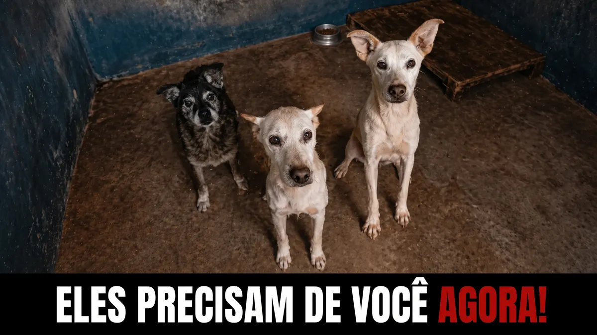
Sem alimento, de nada serve tirá-los das ruas. O abrigo os protege do frio e da crueldade, mas é a ração diária que os mantém vivos, reabilita seus corpos feridos e devolve a alegria de abanar o rabo.
Muitos chegam até nós em estado de completa inanição. Nós não desistimos de nenhum deles. Mas somos uma ONG movida pela solidariedade de pessoas como você.
Sua doação não se perde em burocracia. Ela vira sacos de ração que nutrem esperança, saúde e a chance de uma nova família.
Nós não desistimos de nenhum deles — mesmo com dívidas acumuladas de tratamentos veterinários de emergência. É a solidariedade de doadores como você que nos mantém de pé.
[link de doação DESATIVADO — análise]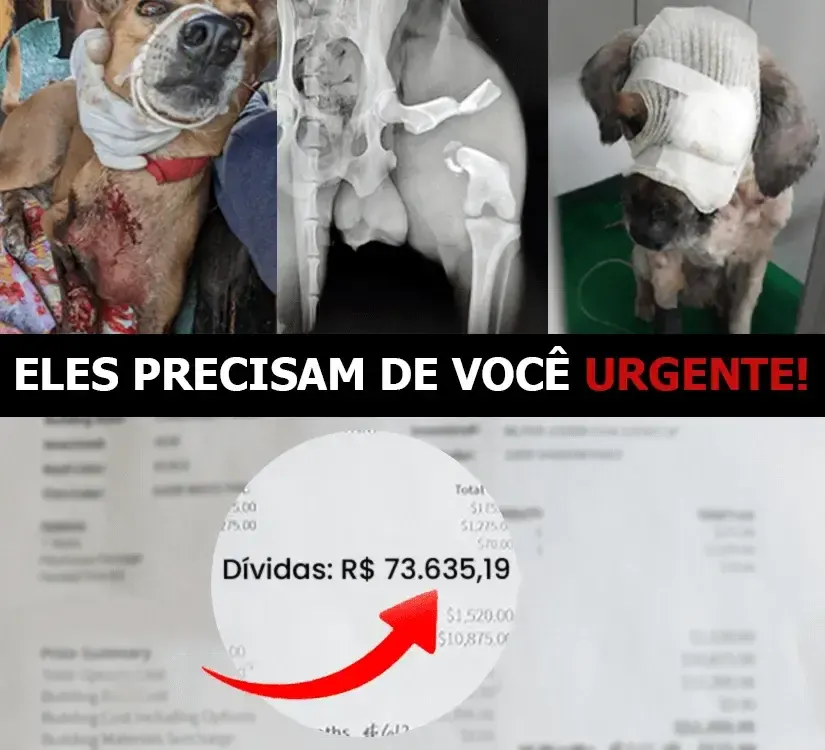
Escolha a quantidade de ração que você quer doar.
Pagamento rápido, seguro e sem complicação.
Sua contribuição vira comida na tigela de quem mais precisa.
Cada fotografia é uma história de abandono que pode ter um final feliz.
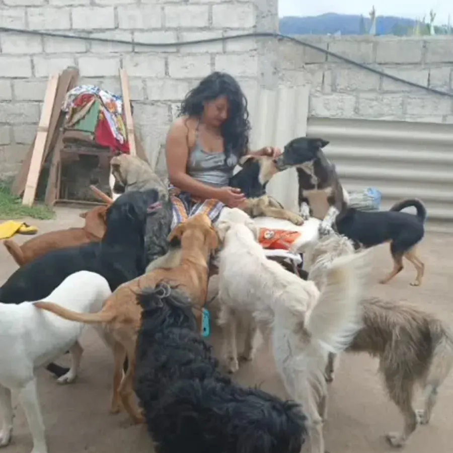
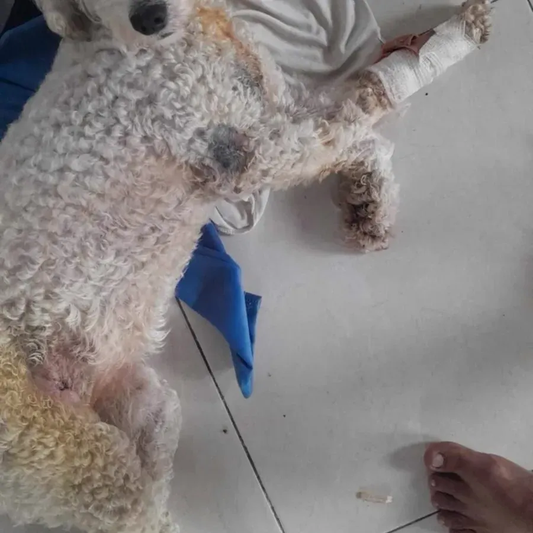
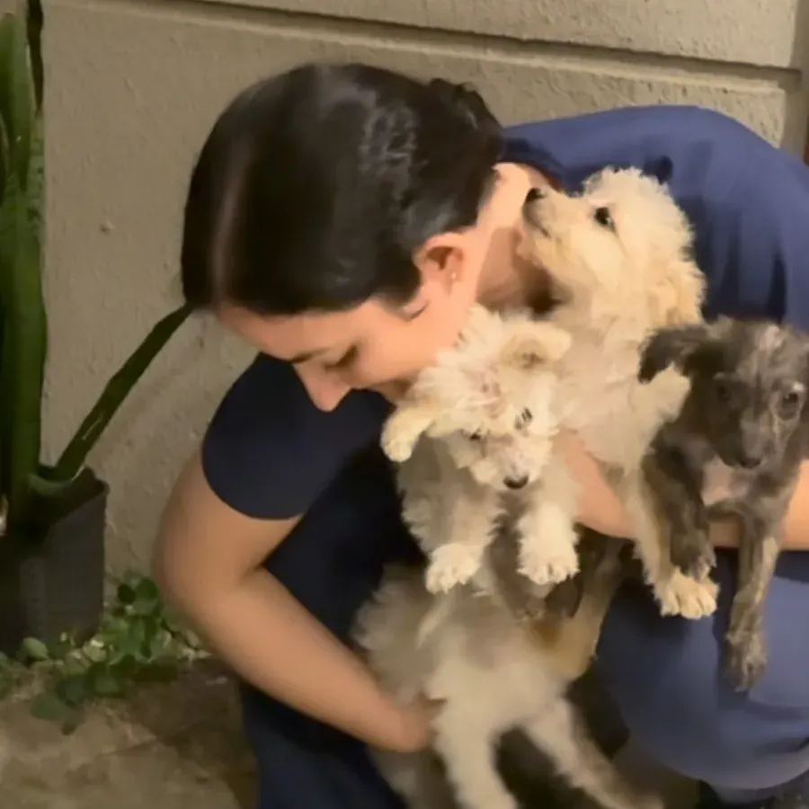
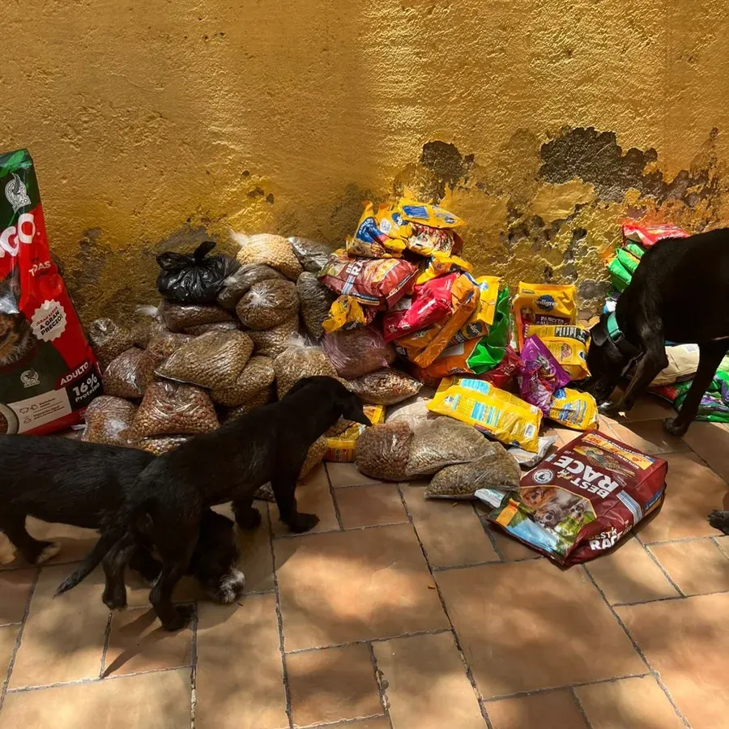
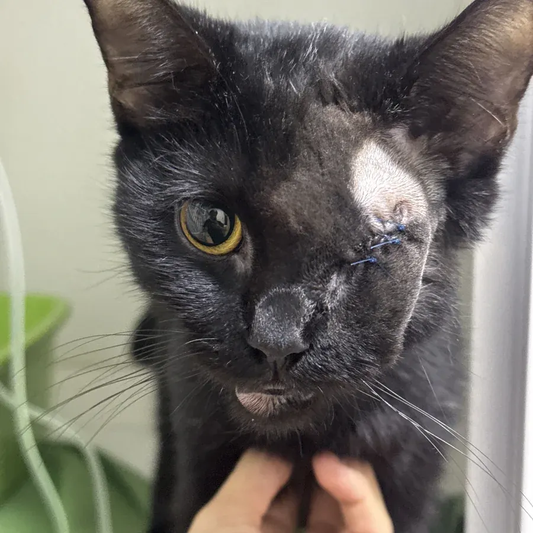
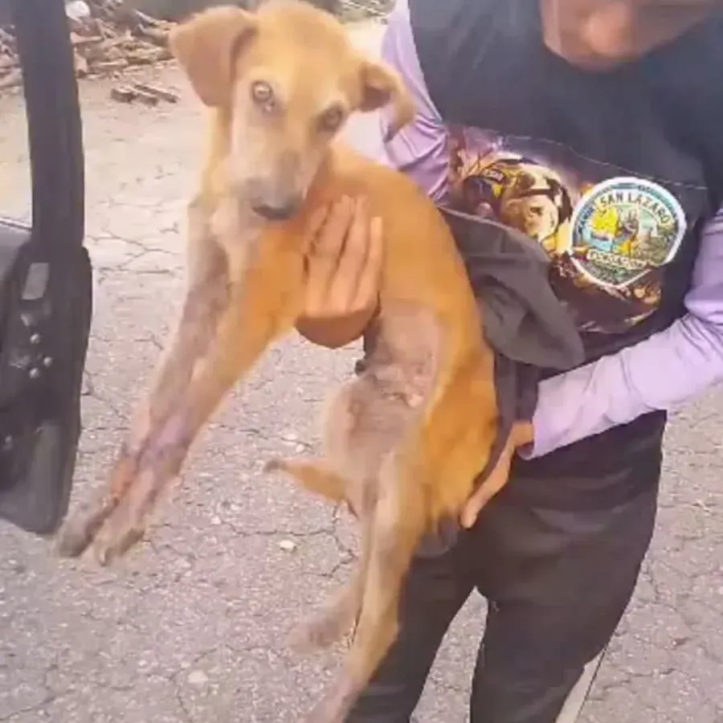
"Um cão resgatado pode não ter a capacidade de dizer 'obrigado', mas os olhos deles dirão isso todos os dias da sua vida."
Escolha a quantidade de ração que deseja doar. 100% do valor vai para barrigas famintas.
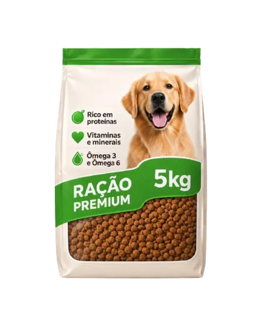
Um pequeno gesto, um impacto enorme. Alimenta 5 animais resgatados do abandono por 3 dias inteiros — porque toda barriga cheia é uma vida que vale a pena.
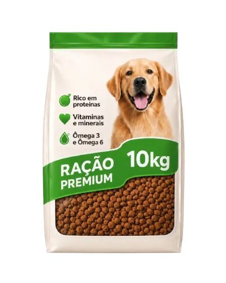
Alimenta 7 animais por 5 dias com nutrição adequada. Nos ajuda a manter as barriguinhas cheias e os corpos frágeis em recuperação!
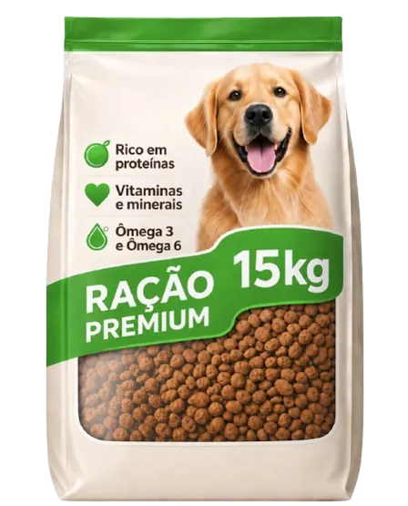
Garante a sobrevivência de 9 animais por quase uma semana completa. Menos fome, mais esperança — e mais chance de um novo lar.
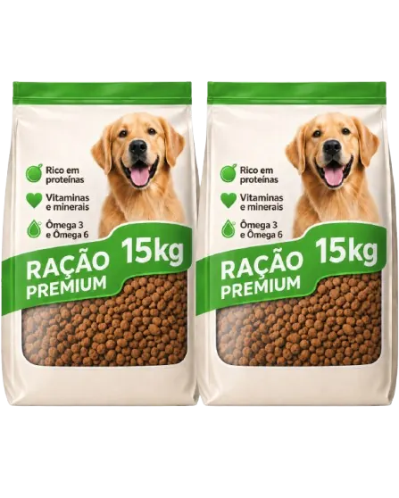
Um impacto gigantesco: alimenta 15 animais por 8 dias no nosso abrigo. Eles precisam da sua força — e você tem o poder de dar.
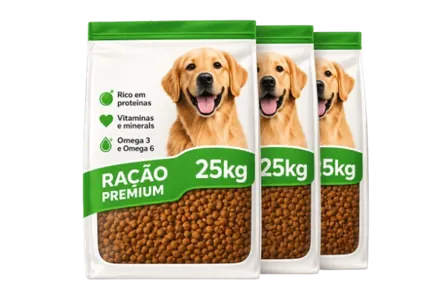
Uma doação extraordinária: alimenta 28 animais carentes por 12 dias. Com esse gesto, você se torna nosso principal parceiro de esperança.
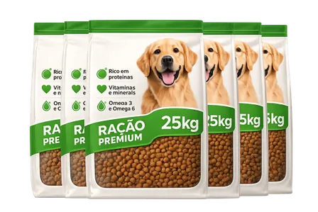
O milagre que esperávamos: salva e alimenta 45 animais durante 18 dias! Seja um anjo da guarda — eles nunca vão esquecer.
Contribuição financeira única. Imagens ilustrativas: não há entrega de ração ao doador nem cobrança recorrente. As referências de animais e dias variam conforme porte e necessidade.
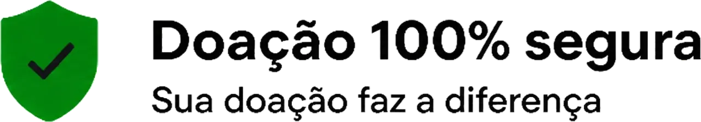